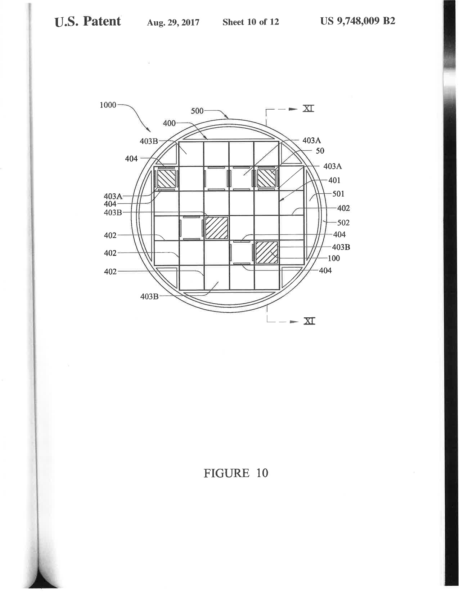
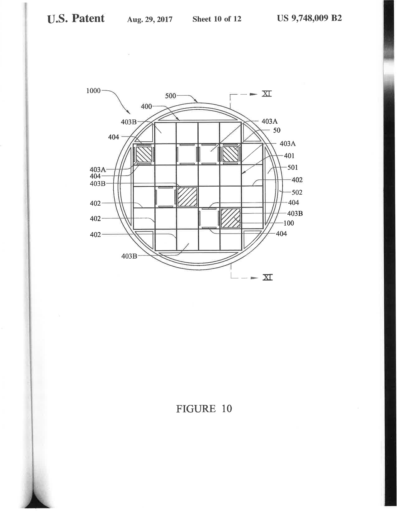

The political ecology diagram can be found here
France is the world's largest consumer of nuclear energy; deriving 75% of the country's electricty from its use. Since the beginnings of the French nuclear program in the 1950s, there has been an industry of importing uranium from the historically colonized countries of Gabon, Madagascar, and Niger. Of these three countries only Niger is operational and continues to supply France with Uranium ore for its nuclear reactors. The complex historical relationships, power dynamics, and colonial histories that exist between France and its African counterparts continues to exist in this intercontinental uranium chain.

Nuclear States of Being looks at this technopolitical entanglement
through the use of landsat image bands; in this case bands 7, 6, and 11. Bands 7 and 6
both cover different slices of the short wave infrared spectrum and are useful for distingushing
wet and dry earth. Band 11 is a thermal infrared band that sees heat meaning it shows the temperature
of the ground in the field of view. Combined, these bands give a false color rendering of the scene.
The images show both the locations of uranium extraction and the
locations of nuclear power distribution in France. Cities and towns where nuclear power is the
source of electricity are shown in direct contrast with the possible locations where the ore
that supplied their home with power was mined. Asking where the French
"radiance" comes from and what dynamics were at play for that power to come to be are critical
in developing this assemblage.

The process of stiching together the different bands to create a new lens to view these
drastically different environments in is meant to highlight the disconnect between the
beauty of the images, the gaps within the supply chain, and the overall narrative at stake.
The full collection of images can be found
here.
In 1965 the Nuclear Energy Agency,
Organisation for Economic Co-operation and Development, and the Atomic Energy Agency
began publishing a biennial assessment of resources, supplies, production, and demand
projections of uranium in order to try to establish a stable and recognized uranium market.
This report has become known as the Red Book; it is a compilation of official data obtained
through questionnaires and various government records. As anthropologist Gabrielle Hecht has
shown, tools like the Uranium Red Book have been used to turn uranium into a banalized commodity.
Through doing so, the tangible impact that the ore has on the places it is mined
becomes flattened through the guise of development, production, and fiscal bottom lines.
Organisations like the World Information Service on Energy (WISE) have spent years meticulously
documenting the health and environmental impacts of uranium mining and nuclear fuel production as well as
cataloging the various economic and political news within the nuclear industry. Borrowing from feminist
theorist Maria Puig de la Bellacasa, the documentation undertaken by WISE is in itself a matter of care
that acts to keep issues and information present when the.
Below are the covers of Red Books from the last 25 years with corresponding lists, collected by WISE, of
events from the nuclear industry per correlated year. The events are not necessarily
all negative or expository but they are meant to (un)sanitize the nature of the Red Book and offer a
more complete view of the the uranium "market."
UF6 cylinder ruptures during burst test
December 9, 1997
Australian Minister of Environment gives environmental
clearance for the Olympic Dam expansion project
December 8, 1997
U.S. NRC issues safety evaluation report for the Crownpoint
uranium in-situ leaching project(New Mexico)
December 5, 1997
The Atlas uranium mill tailings near Moab (Utah) will
be tested again to determine whether contaminated ground
water is threatening endangered fish in the Colorado River
November 19, 1997
Review Panel releases report on cumulative impacts of uranium developments
November 13, 1997
Leaking containers with radioactive residue from Cabot Corp., Pennsylvania, to be processed
in Utah uranium mill discovered in Toronto
October 28, 1997
Adoption of 'No action' approach leaves 3.8 million m3 of contaminated
groundwater uncleaned at Spook, Wyoming, UMTRA site
October 8, 1997
Still no public participation with Wismut cleanup in Germany
October 2, 1997
Swedish Greens launch motion for 'Global Justice
- Indigenous Peoples and Uranium Mining' in Parliament
September 30, 1997
U.S. Dept. of Labor issues Correction of Occupational Exposure Limit for Uranium in Air
August 4, 1997
License Violations at Power Resources, Inc. Highland Uranium Project, Wyoming, USA
July 29, 1997
Breakthrough! Former Roessing Uranium engineer and cancer victim,
Edward Connelly, finally won his long legal battle
to have the right to bring his compensation case in the British courts
July 25, 1997
U.S. Tenth Circuit Court of Appeals affirms: Navajo Tribal Court
can hear claims against former Kerr-McGee uranium mill
July 24, 1997
The Ecologically Sustainable Development Committee of
Western Australia's Legislative Council is to examine
uranium mining proposals in the state, and provide opportunity for public comment on them in September
July 23, 1997
Radiological Criteria for License Termination: U.S.NRC Final Rule
excludes uranium mills and in-situ leaching
mines; New Rule to be developed for mills and ISL mines;
comments are to be submitted by October 6, 1997
July 21, 1997
Friends of the Earth Sydney submits 'Critique of Supplementary EIS for the Jabiluka Uranium Project'
July 21, 1997
The Western Mining Corporation has admitted leaving the
contaminated trial uranium mine of Yeelirree
exposed to the public, with inadequate fencing and warning signs, for more than 10 years
July 10, 1997
Friends of the Earth Sydney issues Submission
on Olympic Dam Expansion Draft EIS
July 5, 1997
Gore, Oklahoma: Uranium processing plant sprays radioactive waste as fertilizer
July 4, 1997
Relaxed groundwater standards at various US decommissioning sites
June 27, 1997
The full collection of Red Books with corresponding details can be found here.
The United States does not have a permanent geological repository for spent high level nuclear waste. For years various locations around the U.S have been debated as possible sites to solve this problem. Yucca mountain, located in South Eastern Nevada, as a site for this permanent repository has been politically and socially contentious for decades and remains so today. New Mexico has also been a hot bed of corporeal action in regards to this issue. The state is the location of the only permanent repository of any level of nuclear waste in the U.S. (the Waste Isolation Pilot Plant or WIPP) and is now being propositioned to become the location of an interim high level waste storage location by Holtec International.
Holtec promotes the site as an economic benefit to the state through hundreds of temporary jobs created during the construction phase, millions of dollars paid to the state annualy and lastly a greater sense of service to the larger waste storage issue at hand. Those who oppose the project cite environment concerns, potential nuclear leakage/spillage, and finnaly the fact that one of the paths which the waste will travel on its way to the facility crosses directly through Navajo Nation Lands. Under Navajo Nation law transporting such waste through such land is illegal. These types of situations are becoming increasingly more common in less populated states where the populations that are most affected have the fewest options to protect themselves.
All of these factors in place, the current high level waste infrastructure consists of nuclear power facilities storing spent fuel on site using below ground wet pools for up to seven years before moving the waste to above ground dry storage casks. These casks are considered temporary but they hold guarantees of safely storing fuel for millenia. It seems obvious but a rethinking of this infrastructure seems more than necessary. These video loop below and the linked page show timelapses of the buildup of spent fuel casks over the course of the last 30 years. The linked page shows this information for each nuclear plant in the United States (both operational and de-commissioned).
The full collection of timelapses can be found here.
The United States has generated 80,000 metric tons of high level nuclear
waste since the beginning of its nuclear power industry. This waste is, in almost
every circumstance, stored at the site of its generation; first stored in underground
pools for up to seven years and then stored in above ground dry storage casks indefinitely.
Potential sites of storage such as Yucca mountain are under relentless bi-partisan scrutiny
and no consensus seems to be coming in the near future as to what a solution for the
ever increasing storage issue
could be.
This design fiction questions the singular vision of nuclear waste as an unwanted byproduct
of the nuclear fuel chain. More specifically the contextualization of the spent fuel as a material
which is to be stored, hidden from the public for millenia, and never spoken of again
as so many advocates and political pundits desire. However, Nuclear Waste Futures considers what
a reframing of the above ground storage cask could look like as an apparatus for memorialization
instead of disregard.
The cask form is ubiquitous with holding spent nuclear fuel that is radioactive for a timespan of over 100,000 years. Reimaginging it, instead, as an apparatus for memorialization reframes the legacies of each actor involved in the nuclear entanglement. This reframing allows for the histories of the people, communites, ecologies and so on to be placed at the forefront of infrastructural planning around the nuclear fuel chain. It also allows for the spent nuclear fuel to have its own agency and material-semiotic positioning within the nuclear world.
This fiction resides within a world of nuclear acceptance; the same form of respect, care, and maintenance is given to nuclear memorialization as with any other memorial or monument. Large plots of land are designated for the cask apparatuses to be gridded out and placed for onlookers to come pay their respects or wander around curiosly. Each memorialized cask is engraved with the specific latitudes and longitutes of locations where the movement of uranium, in whatever form it was in at the time, became entangled with other agents along its path towards its final mattering.

In another situation the memorialized cask is put in context to replace iconic monuments. The question here is centered around asking what would happen if society thought of its energy supply, the outcome of that energy production and in terms as matters of care rather than as nuisances which have to be pushed under the metaphorical rug and literal mountain.


Thank you goes here